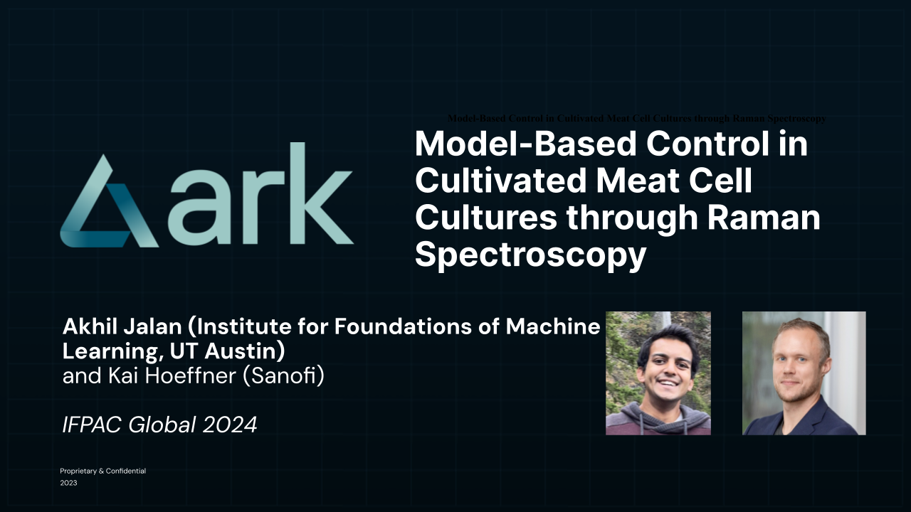
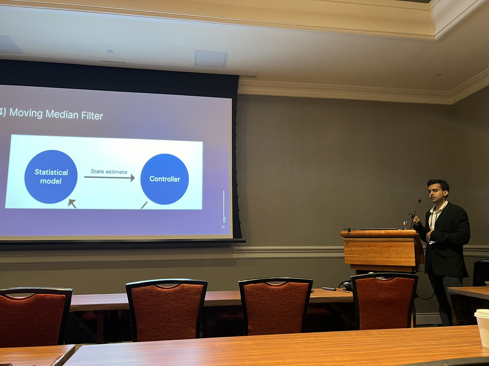

IFPAC 2024
Bioprocess optimization is critical to scaling cultivated meat. In this work, we used machine learning and feedback control to perform real-time feedback control of a bioreactor cell culture with Raman spectroscopy. This work was joint with Kai Hoeffner, my former supervisor at Ark Biotech, with support from the entire team. I presented the work at IFPAC 2024, the premier global conference on process analytical technology (PAT) in bioprocessing and pharmaceuticals.[Talk slides (PDF)] 
